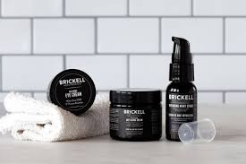
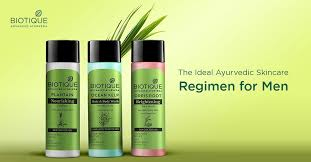
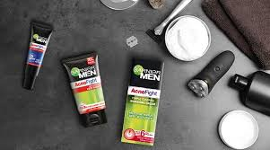

Lemon juice: Apply lemon juice to the face to help lighten dark spots and blemishes. Leave it on for about 10 minutes before rinsing off with warm water.
Aloe vera: Apply aloe vera gel to the face to help soothe and moisturize the skin. It can also help reduce inflammation and redness.
Tea tree oil: Tea tree oil has antibacterial and anti-inflammatory properties that can help to reduce acne breakouts. It can be applied topically to the skin in diluted form.
Cucumber: Cucumber has a cooling effect that can help to reduce puffiness and dark circles around the eyes. It can be applied topically to the skin or consumed as a part of a healthy diet.
Green tea: Green tea contains antioxidants that can help to protect the skin from damage caused by free radicals. It can be consumed as a beverage or applied topically to the skin as a toner.